IDAS / AMSCLAW
IDAS 参会｜林平宏：
AMSclaw 如何把
模拟电路设计串成闭环
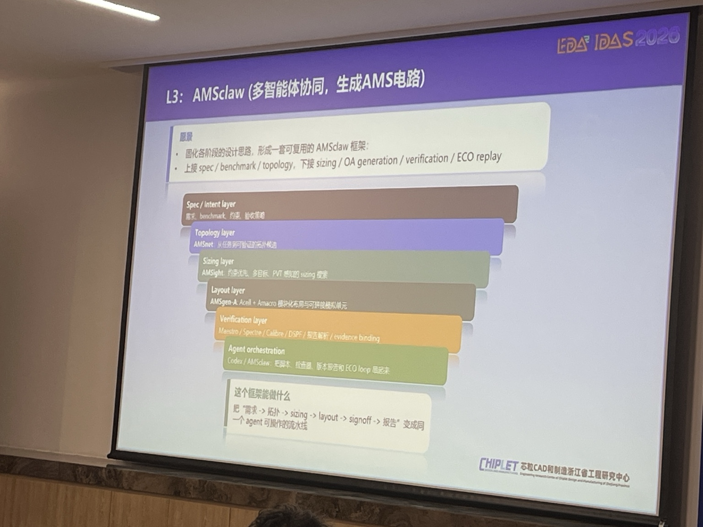
根据 IDAS 2026 现场分享、17 张拍摄页面与会后整理记录编写。文中的面积、迭代次数和流片信息均按现场页面转述；不同工具的比较条件并不完全一致，因此只用于说明报告中的工程路线。
林平宏教授的报告同时展示了两类实践：一类是让 Codex 直接进入 Virtuoso OA、Spectre 和 Calibre 工作流，完成一次 LDO 的端到端设计；另一类是把模拟电路知识、专用数据、尺寸优化和自动版图固化为 AMSclaw。两者的区别不在于有没有大模型，而在于设计经验是否已经变成可复用的系统能力。
一、从三波自动化到 L1、L2、L3
报告先回顾了模拟设计自动化的三波演进：早期以规则和知识为主，随后进入模板、优化与仿真驱动的方法，再到今天的 AI/ML 与智能体。这里的“新”不是抹掉原来的工具，而是把过去分散在脚本、算法和工程师经验中的环节重新组织起来。
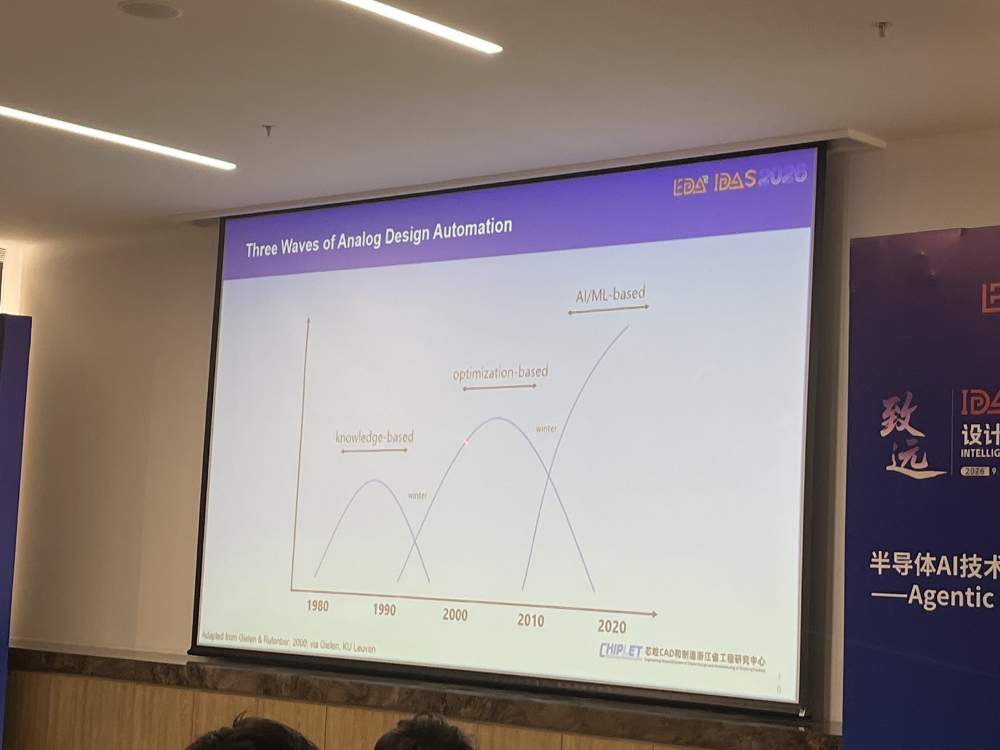
现场又用 L1—L3 区分不同成熟度。L1 是通用智能体调用现有 EDA 工具，能够完成明确、边界较窄的任务；L3 则把电路数据、拓扑选择、尺寸优化、物理实现、验证证据和 ECO 回放连成可复用流程。报告的重点正是从一次性的 L1 实践，走向 AMSclaw 这样的 L3 系统。
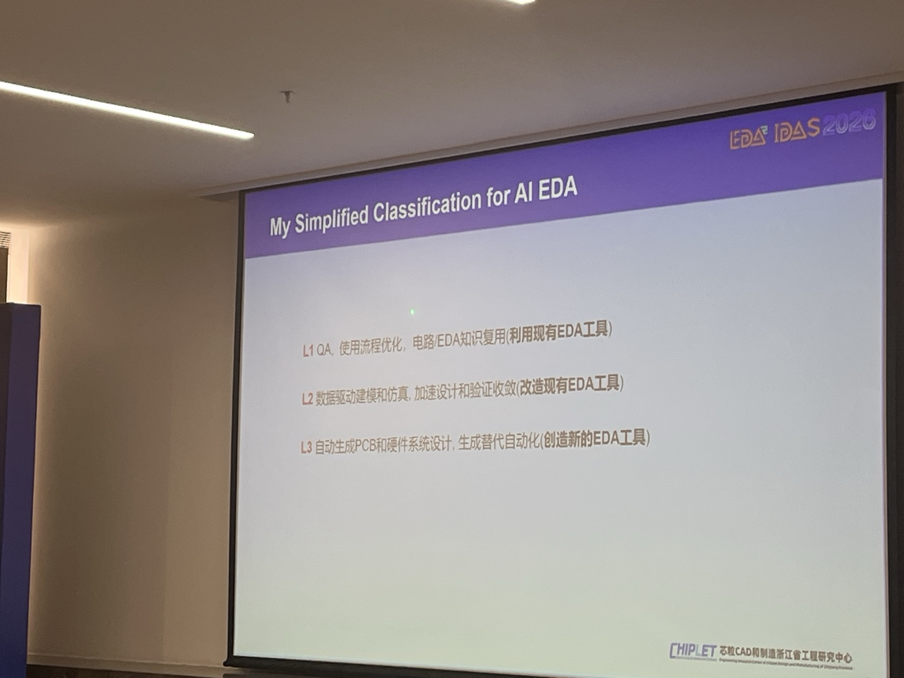
二、L1 实践：让 Codex 生成一颗完整 LDO
第一部分实验把 Codex 接入 Virtuoso OA、Spectre 与 Calibre。任务不是生成一段示例代码，而是交付可以继续验证的工程：OA schematic、symbol 与 layout，Maestro testbench、输出与指标，Calibre DRC/LVS/PEX 流程，DSPF 后仿链路，以及最终 GDS。
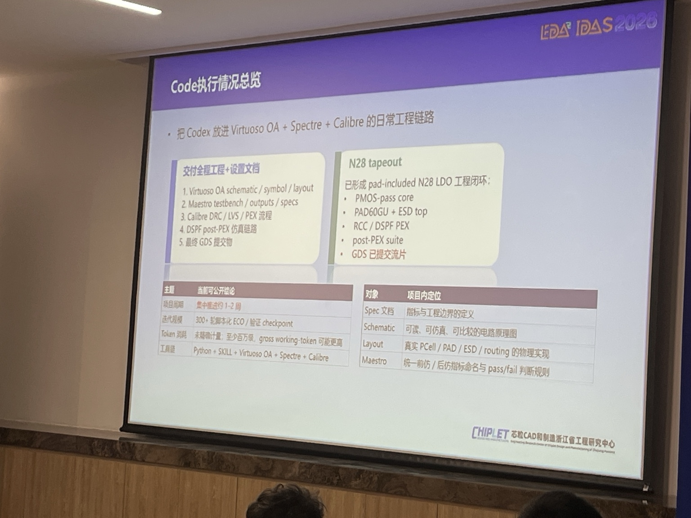
这次 N28 LDO 实践包括 PMOS-pass core、PAD60GU 与 ESD top、RCC/DSPF PEX、post-PEX suite，并形成了可提交的 GDS。现场估算完整工程跨度约一到两周，过程中发生大量脚本修改、ECO 与检查点回放，token 消耗达到百万级。
版图生成被拆成七步：定义输入约束、模拟退火布局、A* 布线引导、生成 OA 追踪脚本、实例化真实 PCell、局部重叠与 ECO 修复，最后运行 sign-off 检查。页面底部记录了 305 次设计脚本迭代、339 次版图修改迭代，以及 40 次人工干预。
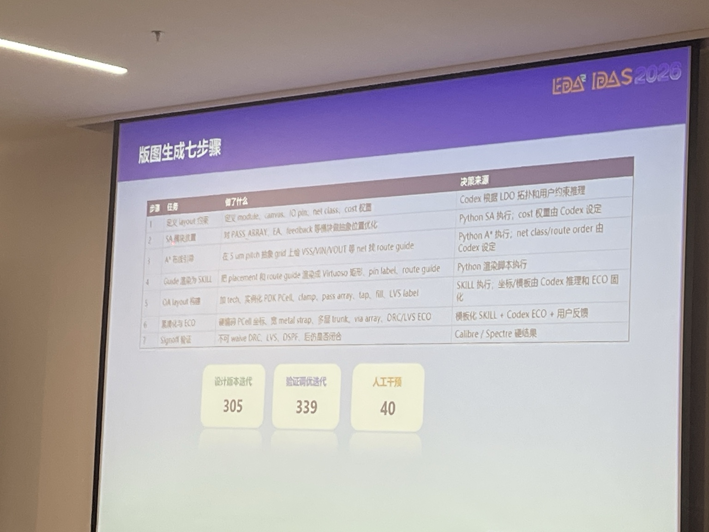
它说明通用智能体已经能沿真实工具链推进一个完整任务，也暴露出这种方式的成本：流程依赖大量 prompt、脚本、状态检查和人工纠偏。每做一个新电路，如果仍需重新经历同样的试错，经验就没有真正沉淀下来。
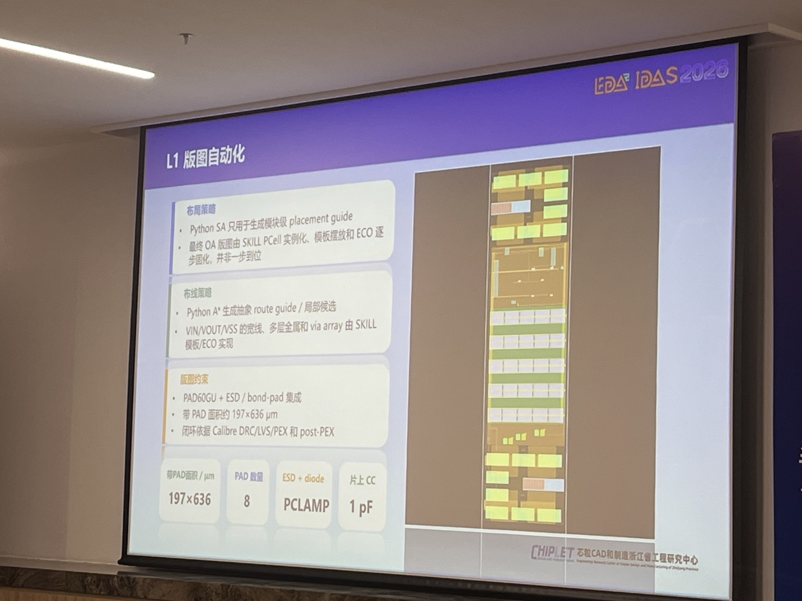
三、L3 不是更多 Agent，而是固定设计接口
AMSclaw 把一次工程拆成六层，每层都有明确输入和输出：
其后还有验证层与编排层：Maestro、Spectre、Calibre、DSPF 提供可追溯证据，Codex/AMSclaw 负责调度、检查、版本回放和 ECO 循环。这样，需求、拓扑、尺寸、版图、sign-off 和报告可以顺序流转，也可以从后端结果反向回到前端。
报告把背后的取舍概括为：晶体管级版图必须进入完整设计流，但为了提高效率，又需要尽量与具体 PDK 解耦。Acell 正是用于处理这组矛盾；前端的 AMSnet、AMSgen/AMSight 与后端 AMSgen-A，则分别承担电路表示、拓扑尺寸和自动版图任务。
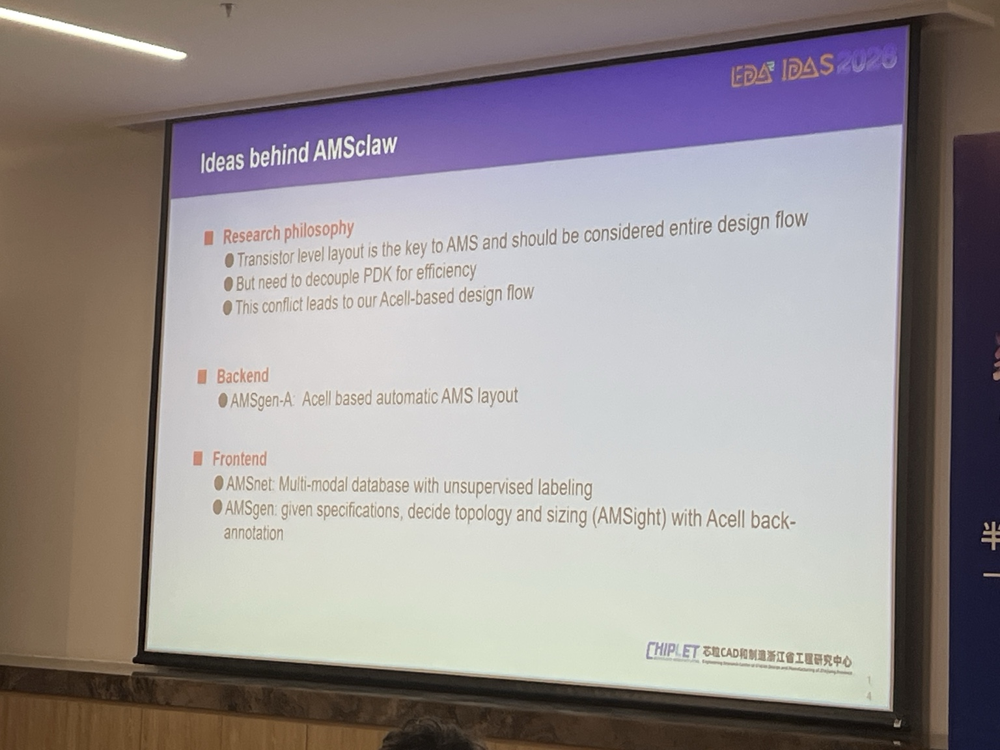
四、AMSgen：从指标到拓扑，再到尺寸
在前端，流程先根据规格判断拓扑类型，再从 AMSnet-q 检索候选电路，最后结合自动生成的 testbench 做尺寸优化。现场曲线显示，加入局部电路标注后，优化轨迹更快达到更高的目标值；这也是专用电路表示相较通用语言表示的作用之一。
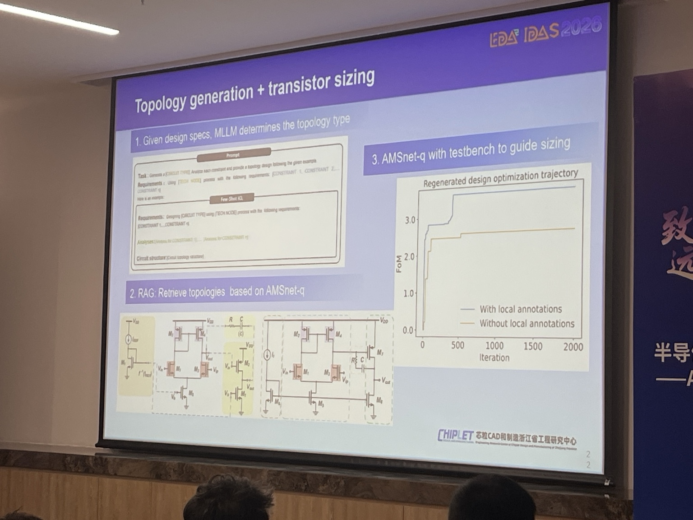
报告还展示了一个基础模型对运放结构判断的对比：通用模型的注意力虽然覆盖了电路图，却没有稳定识别出完整运放；AMSnet-q 能给出相应判断。这个例子支持的是“专用数据和表示有必要”，并不能单凭一页对比证明模型在所有拓扑任务上都更好。
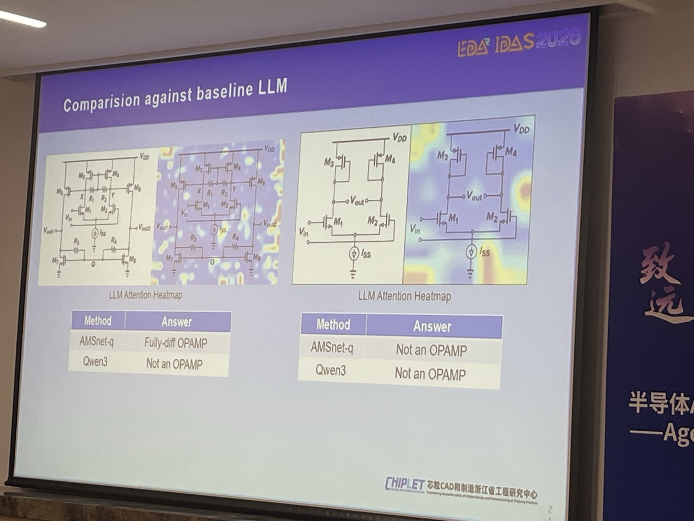
尺寸层采用 AI-native sizing tool 与 harness：Agent 负责根据任务生成和调整优化配置，专用工具负责仿真调用、多目标搜索、Pareto 权衡和敏感度分析。报告的总结页称，系统已经为 6000 个以上、且仍在增长的电路自动生成 testbench 并执行仿真。
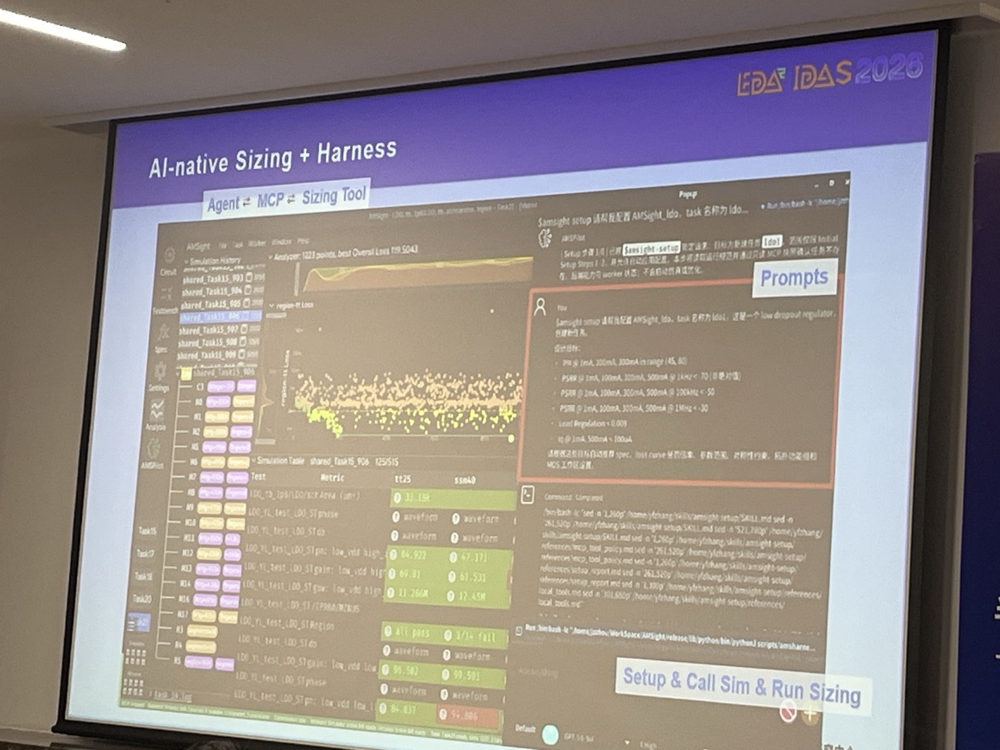
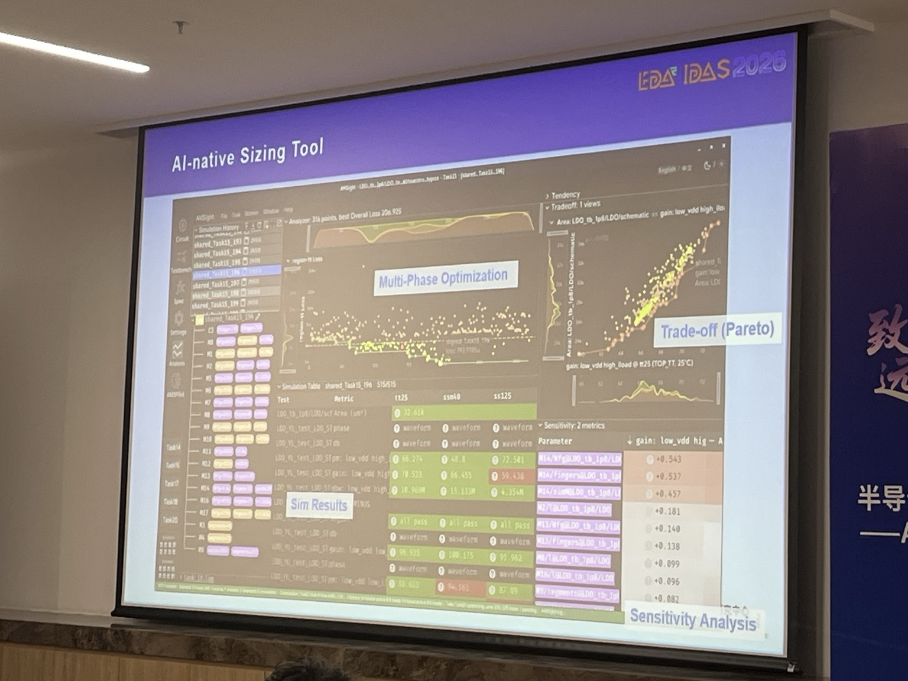
五、Acell：前端和后端之间的桥
Acell 是整套路线里最关键的物理抽象。它把不同尺寸的模拟晶体管封装成形状规整、可邻接、满足 DRC/LVS 规则的 PCell；多个 Acell 再组成紧凑但仍可拼接的 Amacro，从而采用更接近数字电路的布局布线方式。现场页面还给出了相较文献中 Stem cell 面积减少 50% 的结果。
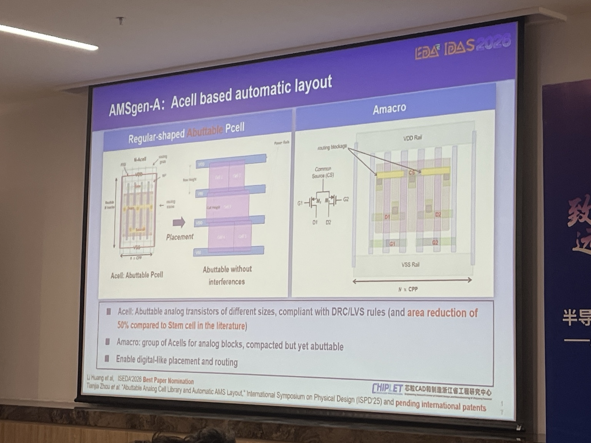
更重要的是，Acell 不只服务于自动版图。传统流程先在 schematic 上完成 sizing，再到版图后用寄生参数验证；如果性能退化，就回到前端重新调整。Acell 的形态和局部寄生更可预测，因此可以先生成带物理信息的标注网表，把后端影响回标给尺寸优化，再进行 re-sizing。
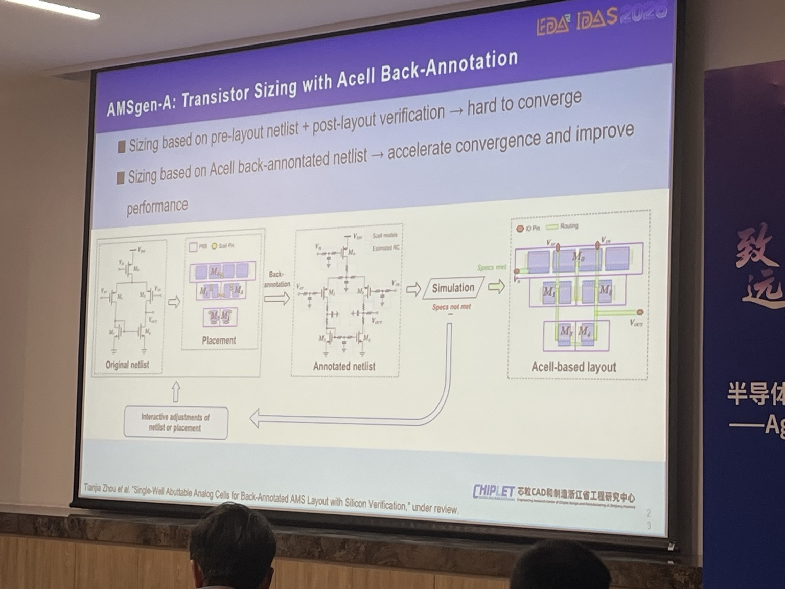
因此，报告中的主流程可以写成：
Spec → Topology → Sizing → Acell Layout → Back-annotation → Re-sizing → Verification
它不是简单的“LLM → EDA Tool”，而是利用稳定的物理抽象，让前端优化能够提前看到未来版图的部分影响。
六、面积和性能：现场展示了什么
LDO 对比
在 LDO 页面中，Acell-based layout 的面积为 3544 μm²，相比页面基准 PCell-based layout 的 4800 μm²减少 26%，DRC 与 LVS 违规均为 0，面积利用率为 85.49%。同页 ALIGN 与 MAGICAL 的数据分别来自各自的 28 nm 技术配置，而不是完整商业 PDK，因此这组数字不适合当作严格同条件排名。
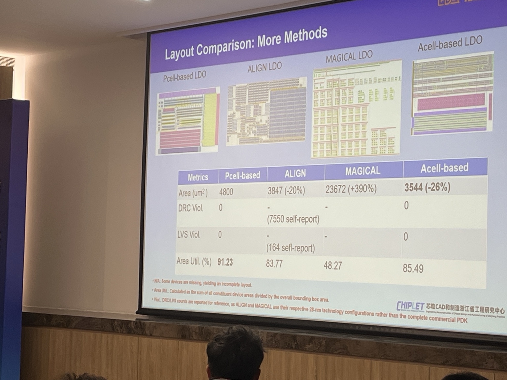
PGA 对比
PGA 案例采用 28 nm 工艺，包含 866 个晶体管和 200 个无源器件。Acell 版图面积由 40,888 μm²降到 38,132 μm²，约减少 7%；页面列出的增益、带宽、输出摆幅和 CMRR 整体处于相近范围，其中部分 CMRR 指标更高。报告将 8-bit DAC、PGA 等样例标记为 silicon-proven。
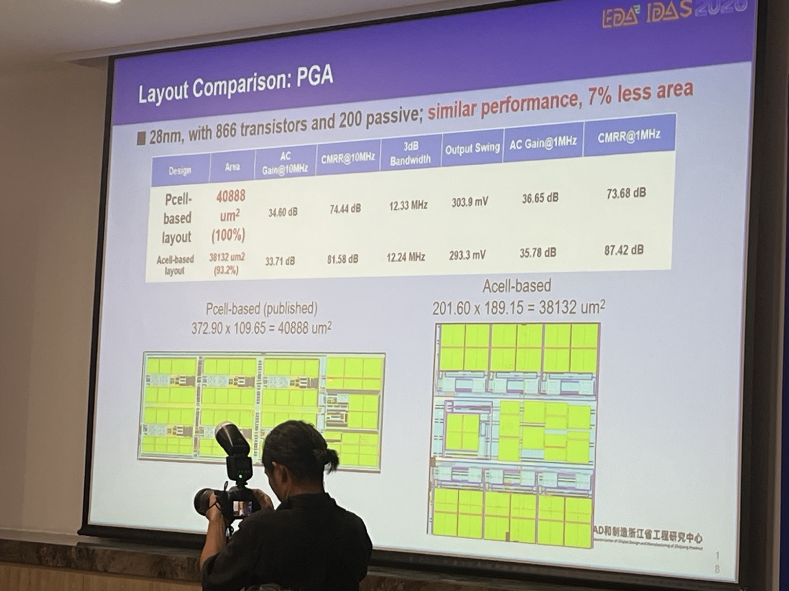
七、L1 与 L3 的直接对照
同一场报告把两种路线并排放在一页：Codex 加专家 prompt 的 L1 版本能够完成单颗设计和流片所需链路，但页面给出的版图面积利用率为 42%；AMSclaw+Acell 的 L3 版本为 90%。这组对比的意图是说明，通用智能体可以把任务做完，而专用物理抽象与可复用流程进一步改善执行效率和版图组织。
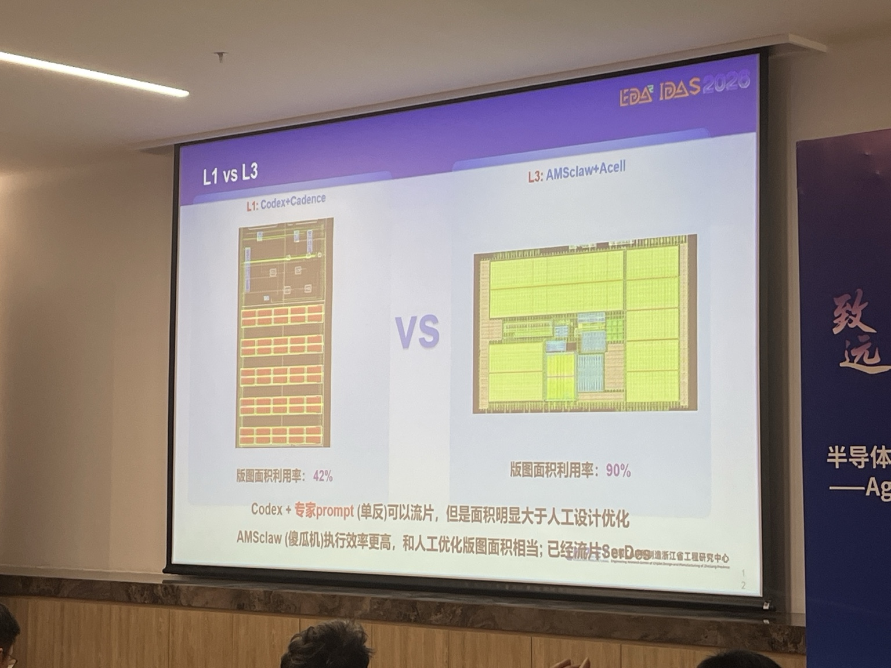
两者并非互斥。Codex 仍可以作为上层编排与异常处理入口；AMSclaw 则把稳定的部分沉淀为拓扑库、优化器、Acell 库、验证规则和可回放流程，减少每次从自然语言重新解释任务。
八、AMSclaw 的现场结论与适用边界
总结页把 AMSclaw 分成两部分：AMSgen 面向规格驱动的拓扑和尺寸设计，并通过回标连接物理信息；AMSgen-A 面向基于 Acell 的自动版图。页面还把“两套 PDK 的 SerDes tape-out”列为 2026 年 5 月里程碑，但没有在该页进一步说明两套结果的当前验证状态。
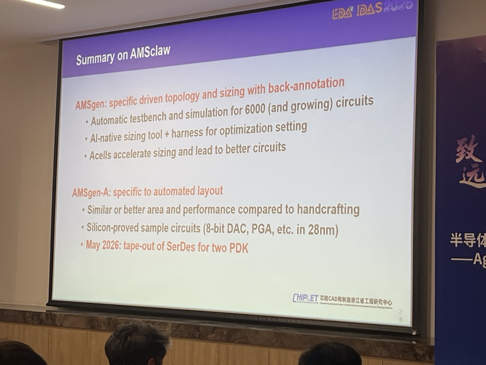
从本次展示可以确认的范围是：通用智能体已经能进入商业 EDA 工程链路；AMSclaw 能把规格、拓扑、尺寸、Acell 版图、验证和回标组织成分层流程；LDO 与 PGA 页面给出了面积和性能数据。现场没有展示极端 matching、RF、高频寄生利用或特殊器件组合下的系统结果，也没有证明所有模拟电路都适合被 Acell 化。
Acell 通过收敛版图自由度换取自动化与可预测性。它在什么电路上成立、在哪些指标下会限制人工布局可以利用的自由度，仍需要按工艺、频率和电路类别分别验证。